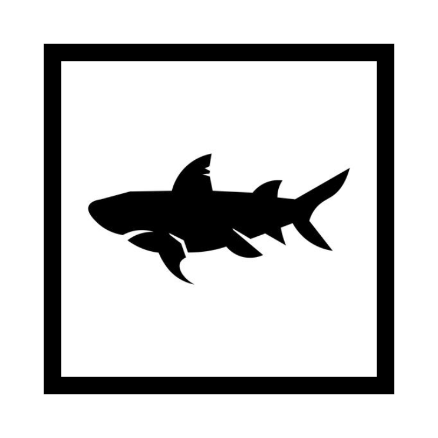

Se caracterizan por ser grandes depredadores, tener esqueleto cartilaginoso y (generalmente) boca ventral. Los tiburones incluyen desde especies pequeñas de las profundidades marinas, hasta el tiburón ballena, el mayor de los peces, el cual se cree puede llegar a medir una longitud de 18 m y se alimenta únicamente de plancton. El tiburón toro puede desplazarse a agua dulce y algunos ataques de tiburones han ocurrido en ríos. Algunas de las especies mayores, en especial el tiburón mako y el tiburón blanco, son endotermos parciales, capaces de mantener parcialmente su temperatura corporal por encima de la que tiene el medio acuático en el que viven. De las más de 375 especies de tiburones encontradas en los océanos del mundo, las especies responsables de la mayoría de los ataques a humanos sin mediar provocación son el tiburón blanco, el tiburón tigre, y el tiburón toro. El tiburón ballena puede llegar a pesar unas 21,5 toneladas y medir unos 7 metros.
Observa esta imagen con tu celular con RA para ver una sorpresa
mrcano369.github.io/ra/scaner.html